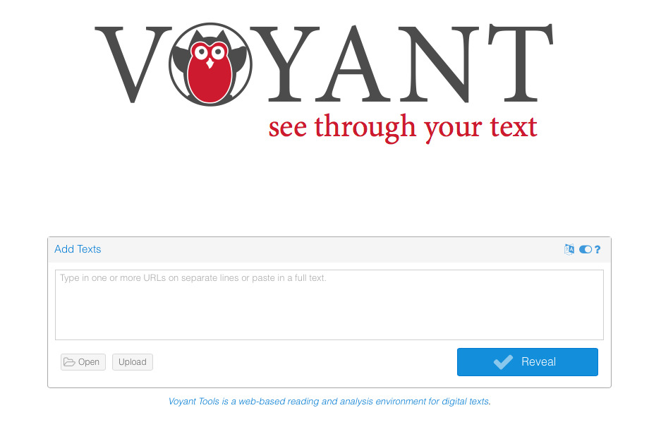
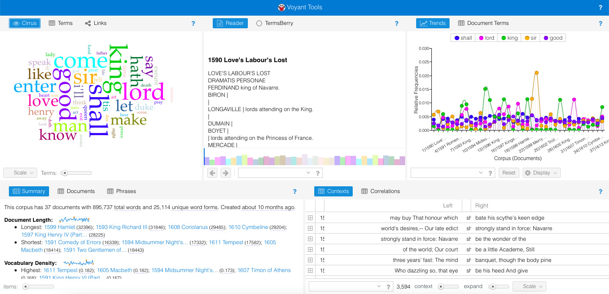

If you're into the Digital Humanities, you probably know about the importance of text analysis. Whereas programming languages such as Python or R allow you to do this efficiently, some people prefer to use tools which don't require any coding skills. A good example of such a tool is Voyant Tools, an open-source web-based application for text analysis. In this blog post, I will show you the basics of using Voyant Tools to analyze a corpus.
To analyze a corpus, the first thing you need to do is to import your corpus (obviously!). In Voyant Tools, you can either paste your texts into the main box, upload your own files ("Upload" button), or open an existing corpus ("Open" button).

If you choose the latter option, Voyant Tools currently has three corpus: Shakespeare's plays, Austen's novels, and Mary Shelley's Frankenstein. For this blog post, I will choose the corpus of Shakespeare's plays to illustrate the examples.
After selecting a corpus, you will be shown a page with lots of information.

This is called a "skin" (more specifically, this is Voyant Tools' default skin). There are several panels which provide you with direct information from your corpus:
Cirrus: this panel shows a word cloud with the terms that are most frequently used in the corpus.
Reader: this panel contains all your texts. It can be very long, depending on how big your corpus is. You can either scroll down or use the horizontal line below to move along your corpus.
Trends: if you click on a term when using the Reader panel, the Trends panel will show you a graph with the frequency distribution across the corpus.
Summary: as its name indicates, this panel provides you with an overview of the corpus (e.g., how many words per sentence there are on average, what the most frequent words are...).
Contexts: this last panel is a concordance tool. If you click on a term in the Reader panel, it will show you each occurrence of the term together with some context.
As you can see from the descriptions of panels in the previous section, Voyant Tools' interface is pretty interactive. As you click on different terms, several panels are updated and automatically show new information.
In addition to selecting terms, you can also interact with the panels further to customize the output. To do this, click on the search bars and buttons within each panel. Once you have customized a panel, you can export the resulting panel using a url that you can embed in other websites (simply click on the "Export" button that looks like a square with a small arrow inside).
Now that you know the basics of Voyant Tools, you can practice analyzing your own corpus or you can learn more by reading their detailed online tutorial.